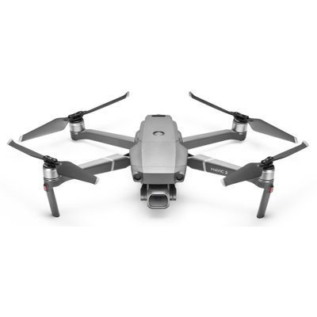

1. The Tesla cybertruck:
This beast is fully automatic, so is a very eco-friendly car. Also it is reasonably cheap (for a car of it's abbility) and lastly, it is very protective.
2. Drones:
Drones are an amazing piece of technology which can be used to do many different things. They range in price from very cheap to very expensive but like most things the more money you spend the better the drone is. They can have great cameras and other cool things.